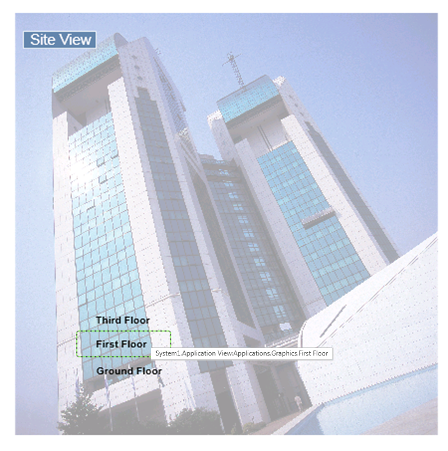
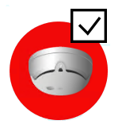
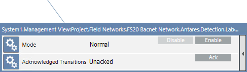
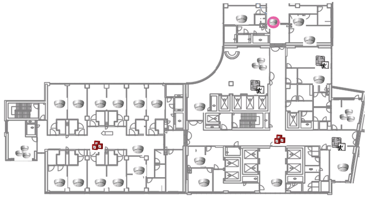

Working with Graphics
The actual graphics available in a project depends on the configuration, but most projects include the following graphics from which the different danger management disciplines can be operated:
- Topology page or site overview
- Floor maps with fire detection, video, access control and intrusion detection objects
Navigation Symbol
If configured, a graphic symbol can be used to directly navigate to another page, for example, from the top view to a floor map, or from the floor map to a section.
When you hover on a navigation symbol, a dotted green frame displays, and a tooltip shows the linked path and descriptive text about the linked page.
- Double-click the navigation symbol to open the linked page.

Danger Management Object Symbol
In floor maps, graphic symbols are used to represent danger management objects, and communicate the following information:
- A static image represents the type of object.
- A circular background shows in color when an event occurs on the object, and it blinks when the acknowledgement is required. The color is associated to the event category as in the Summary Bar and Event List.
- A dotted background displays when the communication with the fire panel is down and the system cannot determine and show the condition of the object.
- Some symbols provide a command icon with direct control actions, for example, the acknowledge command .
NOTE: When an event is active that concerns an object represented in the graphic, the main control commands are also available in the Status and Commands window that displays next to the symbol.

When you hover over a navigation symbol, a dotted red frame displays, and a tooltip shows the location and the description of the object.
- Click the symbol to select the object. The Contextual pane provides the complete set of properties and control commands for the selected object.

Handle Events from Graphics
You can handle an event--for example, acknowledging an alarm—directly from a graphic.
- In System Browser, select the graphic where the object is located.
- In the graphic, click the alarmed object (area, section, zone, or device). Note the colored background of the symbols representing the abnormal conditions.
- You can issue the acknowledge command from:
- If available, the icon included in the symbol (see Danger Management Object Symbol)
- The Status and Command window that displays next to the symbol
- The Operation and Extended Operation tab in the Contextual panel (see Advanced Layout)
Exclude / Include Fire System Objects
You can disable fire system objects (areas, sections, zones, and devices) to temporarily exclude them from the system, and later re-enable them as needed.
- In System Manager, set the advanced layout (see Advanced Layout).
- In System Browser, select the graphic where the object is located.
- In the graphic, click the object (area, section, zone, or device) that you want to exclude (or re-include).
- In the Extended Operation tab, click Disable or Enable.
- In a few seconds, the command executes and the new disabled/enabled status displays.
NOTE: The exact terminology may vary where the object may display as Excluded/Included. - A Trouble event will be displayed in Event List to remind all system operators that an object is excluded.
Get Status: Single Read of Active Inputs
The Get Status command performs a single read of the inputs of an intrusion partition (unarmed), and reports if any are currently active. Active intrusion inputs, if not bypassed, prevent the system from being armed.
- In System Manager, set the advanced layout (see Advanced Layout).
- In System Browser, select the graphic containing the partition.
- Select the partition symbol.
- In the Extended Operation tab, select Mode.
- Click Get Status.
NOTE: To reach the Get Status command, you may need to expand the command list under Ready to Arm. - In a few seconds, if any input is active, the corresponding
Activeevent displays in Event List. - Check the active inputs in Event List.
- In the Textual Viewer or, if available, in a dedicated graphic, you can have a convenient summary of the partition inputs.
Ready to Arm: Continuous Monitoring of Active Inputs
The Ready to Arm command starts a continuous read of an intrusion partition (unarmed), to identify and monitor any active inputs that are not ready for arming. You can use this command to help prepare a partition for arming. Each not-ready input continues to be monitored until:
- The input becomes ready (inactive).
- The partition is armed (Fullset or Partset command).
- Communication with the panel is interrupted.
- In System Manager, set the advanced layout (see Advanced Layout).
- In System Browser, select the graphic containing the partition.
- Select the partition symbol.
- In the Extended Operation tab, select Mode.
- Click Ready to Arm.
NOTE: To reach the Ready to Arm command, you may need to expand the command list under Get Status. - In a few seconds, if any input is active, the corresponding
Not Readyevent displays in Event List. - Check the active inputs in Event List.
- In the Textual Viewer or, if available, in a dedicated graphic, you can have a convenient summary of the partition inputs.
- Remove the not-ready conditions and monitor the changes of state of the inputs. The Ready to Arm command will continue to monitor them.
- When all inputs are all in a normal condition, the system can be armed.

Be aware that the Ready to Arm command only monitors the currently active inputs, and any subsequent change of state from normal to active is not reported until you start a new command (Get Status, Ready to Arm or Arm).